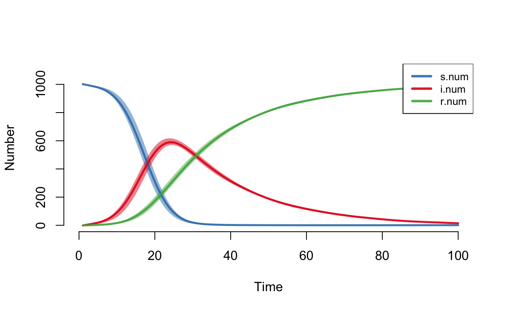
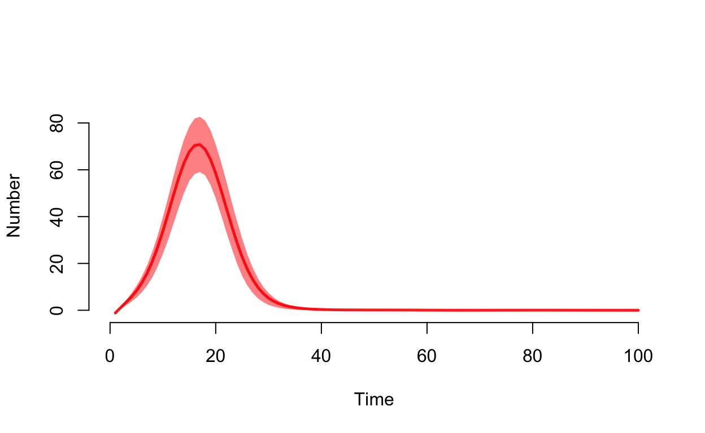
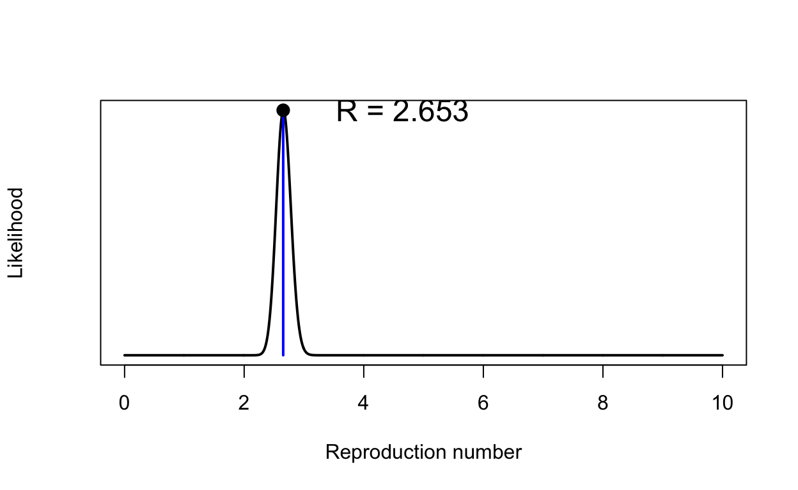
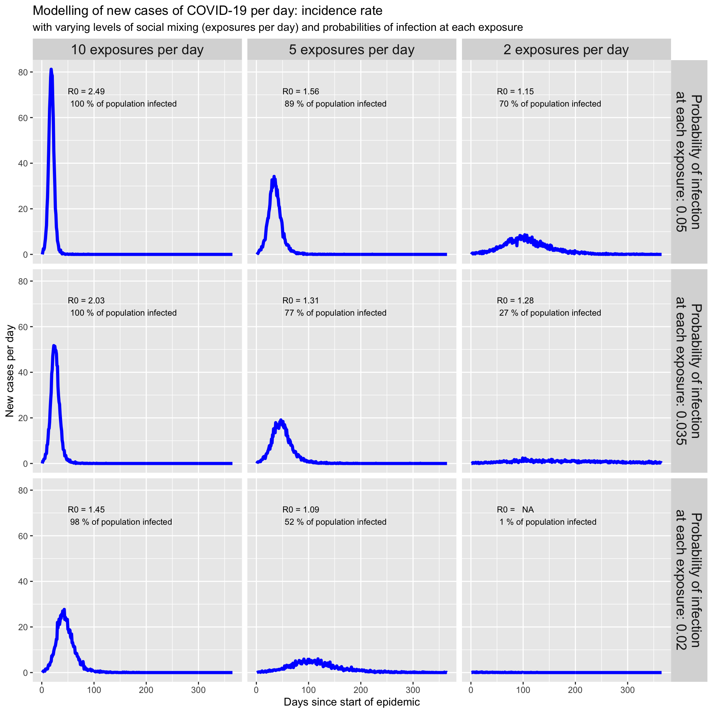
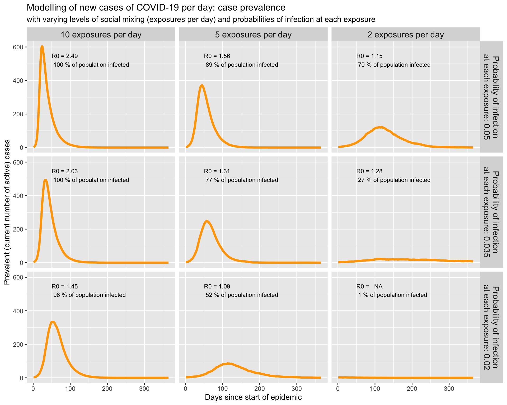
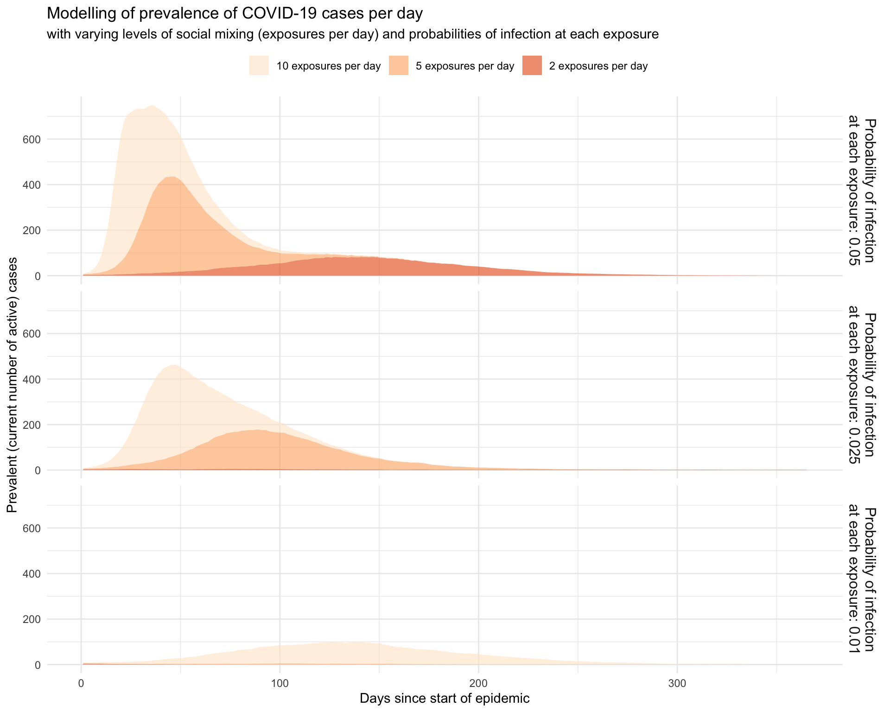
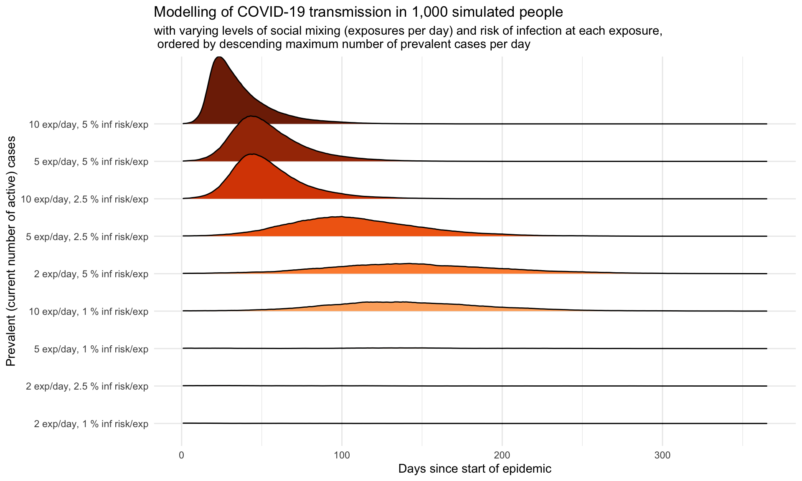
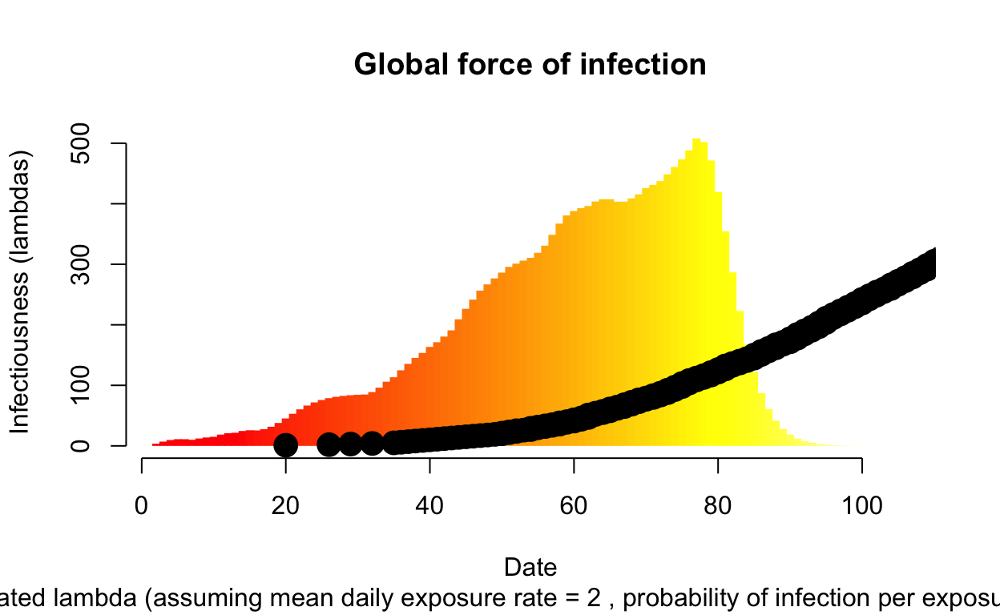

Table of Contents
Introduction
As the implications of the COVID-19 pandemic become apparent, and robust public health responses such as those implemented in mainland China are now being put in place in other countries, most recently in Italy, articles are appearing in the the mainstream media explaining the importance of such public health interventions in flattening the curve.
In this post, we will look at some simple simulations of COVID-19 spread in R, and use those simulations to illustrate why various public health interventions are employed. In later posts, we will examine fine-tuning of those interventions using more sophisticated simulations.
In previous posts, we have examine the use of R and various packages for it developed by the R Epidemics Consortium (RECON) to analyse daily COVID-19 incidence (new cases) data at provincial and city level, first in China, and then in South Korea, Italy and Iran, and to examine very early data on local spread in the US.
Types of epidemic simulation models
In an earlier post, we fitted an SIR dynamic compartmental model to COVID-19 incidence data for Hubei province in China, inspired by a blog post published on 4th February 2020 by data science blogger Learning Machines.
The basic idea behind the SIR model of communicable disease outbreaks is that there are three groups, or compartments, of people: those who are healthy but susceptible to the disease \(S\), the infectious (and thus, infected) \(I\) and people who have recovered \(R\), with defined rates of transition or flow between these compartments:

To model the dynamics of the outbreak we need three differential equations, to describe the flows (rates of change) into and out of each compartment, parameterised by \(\beta\) which controls the transition between \(S\) and \(I\) and \(\gamma\) which controls the transition between \(I\) and \(R\):
\[\frac{dS}{dt} = - \frac{\beta I S}{N}\]
\[\frac{dI}{dt} = \frac{\beta I S}{N}- \gamma I\]
\[\frac{dR}{dt} = \gamma I\]
We use calculus and linear algebra to find simultaneous solutions to these equations in simulated time, and we can use residual sum of squares (RSS) minimisation or maximum likelihood estimation (MLE) techniques to find the values of \(\beta\) and \(\gamma\) that best fit the observed incidence data.
SIR models can be extended in various ways, such as the introduction of an exposed-but-not-yet-infectious compartment (the SEIR model), but as more compartments are introduced, the system of equations becomes more complex and unwieldy, and it is very difficult to model different behaviours in subpopulations (as as age groups).
It is for this reason that stochastic compartmental models were developed. Stochastic models simulate individual members of a population, which allows the introduction of chance – for example, if an infected person coughs all over you, there is a probability that you will acquire their infection, not a certainty. Stochastic models make it relatively easy to specify, for example, different probabilities, or rather, draws from underlying probability distributions, for different classes of people eg by age group, or sex, or both, or current compartment. Typically the models are not so detailed as to simulate individual sneezes or coughs (agent-based micro-simulations can do that), but they can be made sufficiently sophisticated as to adequately model real-life scenarios. Such models can then be used to explore the effects of different types of public health interventions and policies through what-if analyses.
The EpiModel package for R
Here we will make use of the EpiModel package(Jenness, Goodreau, and Morris 2018), developed by a research group at the Rollins School of Public Health, Emory University, lead by Samuel Jenness.
The EpiModel package provides functions to specify:
- dynamic, continuous-time, compartment models (DCMs), as described above
- stochastic, discrete-time, individual contact models (ICMs)
- stochastic, discrete-time, network models
Network models add the additional sophistication of modelling social networks, rather than assuming purely random mixing (and thus exposures) with the entire population. They were developed primarily to model the spread of HIV, but have been widely used to model other communicable diseases, including (other) sexually-transmitted diseases, ebola and even memes within social media networks. However, in this post, we will use the simpler ICM models, partly because setting up the network models requires many more parameters to correctly specify the characteristics of social networks, and partly because the networks models are a lot more computationally intense and thus take a very long time to run. ICM models as implemented in the EpiModel package are not very fast either, and could probably benefit a lot from some code optimisation and/or re-writing in part in C++ using Rcpp, but they run fast enough for the purposes of illustration here.
The EpiModel Research Lab provides an [excellent and comprehensive set of tutorials on the use of the EpiModel package and its extensions, and we won’t seek to replicate those here. We will provide a few explanatory comments, though.
Setting up and running an ICM SIR model
In the first instance, ICM epidemic simulation models are run using the icm() function, which takes three arguments: a param list of model parameters created by the param.icm() function, an initial population of individuals, created by the init.icm() function, and a list of computation control parameters specified through the control.icm() function. Let’s look at each of those in turn in reverse order
control.icm()
The first thing we need to specify is the type of compartment model, with SI (susceptible->infected), SIR (susceptible->infected->recovered) and SIS (susceptible->infected->susceptible) models available by default, but extension models can readily be written, as we shall see later.
We also need to specify the number of time steps. As mentioned, ICMs are discrete-time models, and choice of an appropriate granularity for the time dimension matters. Here we’ll use whole days as the step size, but hourly or weekly or monthly steps are possible depending on the disease being modelled. The step time unit per se doesn’t need to be explicitly specified, but obviously the time unit affects the number of time steps to be simulated, via the nsteps parameter. Because stochastic models include chance, different results are expected each time the simulation is run. The idea is to run the simulation many times, and then take an average (mean or median) of the results, with percentiles calculated across the multiple simulation runs providing credible intervals for those averages. We specify the number of simulations to run via the nsims parameter.
We’ll specify an SIR model, running for 100 days, with ten independent runs to be averaged.
# Load EpiModel
suppressMessages(library(EpiModel))
control <- control.icm(type = "SIR", nsteps = 100, nsims = 10)init.icm()
The simulated population of individuals is initialised via init.icm(). At minimum, we need to specify the number of people in each compartment at the beginning of the simulation. We can also specify distributions for other attributes for each person, such as age or sex, if we are using such attributes in extension models.
We’ll specify a total population of 1,000, initially divided into 997 susceptible individuals, three infected individuals, and no-one in the recovered compartment.
init <- init.icm(s.num = 997, i.num = 3, r.num = 0)param.icm()
Most importantly, we need to specify the rate at which susceptible individuals are exposed to potential infection – due to its roots in HIV epidemiology, this parameter is called act.rate in EpiModel – and the probability of infection at each occasion of exposure, called inf.prob. For the SIR model we also need to specify the rate at which infected individual recover. These rates are expressed as the mean probability of such transitions for each individual in the relevant compartment, say from infected to recovered, per unit of time (each day in this case).
We can also specify demographic processes, including births or immigration, via the arrival rate parameter, a.rate, and deaths or emigration via departure rates, specific to each of the compartments, via the ds.rate, di.rate and dr.rate parameters.
So, in the first instance, we’ll set the exposure-to-infection rate at 10 times per day, and the overall probability of infection across all those exposures at 0.05 – thus, only a 5% chance of actually being infected by each occasion of exposure to infection. That is probably realistic, given that many exposures are likely to be minimal, such as touching surfaces contaminated with virus, and only a few will be high-risk, such as being directly coughed or sneezed on by an infected individual. We’ll also set the recovery rate to 0.05, which will results in a mean time to recovery of about 20 days, but a median time to recover of about 14 days (because recovery for each infected individual is determined by random draws from a binomial distribution with mean set to the recovery rate).
The crude death rate for Australia is about 7 per 1,000 population per annum, so we’ll set the daily (individual) death rate in the susceptible and recovered compartments to (7/365)/1000, but we’ll make the daily death rate in the infected compartment double that, for now. We’ll set the arrival rate at 50% higher than the death rate, to reflect births and immigration.
param <- param.icm(inf.prob = 0.05, act.rate = 10, rec.rate = 1/20,
a.rate = (10.5/365)/1000, ds.rate = (7/365)/1000, di.rate = (3.5/365)/1000,
dr.rate = (7/365)/1000)OK, we can now run the simulation and print a description of the model results object.
sim <- icm(param, init, control)
sim
EpiModel Simulation
=======================
Model class: icm
Simulation Summary
-----------------------
Model type: SIR
No. simulations: 10
No. time steps: 100
No. groups: 1
Model Parameters
-----------------------
inf.prob = 0.05
act.rate = 10
rec.rate = 0.05
a.rate = 2.876712e-05
ds.rate = 1.917808e-05
di.rate = 9.589041e-06
dr.rate = 1.917808e-05
Model Output
-----------------------
Variables: s.num i.num num r.num si.flow ir.flow ds.flow
di.flow dr.flow a.flowEpiModel provides convenient default plotting methods for model objects. The default plot gives the number of individuals in each of the S. I and R compartments at each time point (each day, in this simulation) – that is, the size of the I compartment gives the point prevalence of the disease, in epidemiological parlance.
plot(sim)
We can also plot the flows. si.flow is the incidence (count of new cases per day).
plot(sim, y = "si.flow", mean.col = "red", qnts.col = "red")
Notice that the number of infected individuals climbs rapidly in the first two weeks. Is that realistic? Well, we can check that by calculating the basic reproduction number, \(R_{0}\), for the growth phase of the epidemic curve. Refer to previous posts for details of doing that using functions provided by the earlyR and EpiEstim packages. Note that we will use the serial interval parameters most widely quoted in the literature for the COVID-19 virus here. Others could be used as sensitivity analyses. Conveniently, the EpiModel library provides a method for extracting data frames containing averages from each of the simulation results contained in the model results object.

A MLE estimate of \(R_{0}\) of 2.4 is consistent with current WHO estimates of the COVID-19 basic reproduction number, so our initial set of parameters are consistent with reality. On that basis, and despite the simplifications inherent in our model, we can start to use it to explore the effects of various public health interventions.
Exploring public health interventions using our ICM SIR model
Avoiding opportunities for exposure through social distancing
One of key public health measures is social distancing. As wikipedia says:
Social distancing is a term applied to certain non-pharmaceutical infection control actions that are taken by public health officials to stop or slow down the spread of a highly contagious disease. The objective of social distancing is to reduce the probability of contact between persons carrying an infection, and others who are not infected, so as to minimize disease transmission, morbidity and ultimately, mortality.
We can, naïvely for now, model increased social distancing by simply reducing the average number of exposures (“acts” in EpiModel nomenclature) per day. We’ll explore simulations using 10, 5 and 2 (mean) exposures per day. Such exposure rates apply to everyone in our simulated population, but in later posts we’ll extend our model to allow for different degrees of social distancing in sub-groups of the population.
Hygiene measures to reduce the transmission of viral particles
The other main set of public health measures involve adoption of hygiene measures to reduce the transmission of viral particles between individuals, or from individuals to other surfaces and then to other individuals, such as:
- wearing surgical masks if you are ill or coughing or sneezing1
- frequent hand-washing and use of alcohol-based hand sanitisers
- not touching your face, mouth, nose or eyes, to avoid transferring virus to your nasopharynx and thence to your respiratory tract
- frequent cleaning or disinfection of fomites
We can simulate such hygiene measures in our model by adjusting the probability of infection (at each occasion of exposure). We’ll explore simulations using probabilities of infection at each exposure of 0.05, 0.025 and 0.01 – that is 5%, 2.5% and 1%. In later posts we will make these behavioural adjustments more nuanced, but for now, we will assume that they apply, on average, to everyone in the population.
Exploring the intervention space (the interventionome?)
Let’s wrap all this up into a function that will run our SIR simulation while stepping through three levels of values for each of our two “intervention levers”, the mean number of exposures per day, act.rate, and the probability of infection at each exposure, inf.prob. We’ll collect the results of interest in a tidy dataframe to facilitate visualisation and other reporting.
run_sir_sim <- function(inf_prob, act_rate, pop_size = 1000,
i_num = 3, n_steps = 365, n_sims = 10, si_mean = 7.5, si_sd = 3.4) {
# set up simulation parameters
param <- param.icm(inf.prob = inf_prob, act.rate = act_rate,
rec.rate = 1/20, a.rate = (10.5/365)/1000, ds.rate = (7/365)/1000,
di.rate = (3.5/365)/1000, dr.rate = (7/365)/1000)
init <- init.icm(s.num = pop_size - i_num, i.num = i_num,
r.num = 0)
control <- control.icm(type = "SIR", nsteps = n_steps, nsims = n_sims)
# run the simulation
sim <- icm(param, init, control)
# collect the relevant results in a data frame
incidence_rates <- as.data.frame(sim, out = "mean") %>% select(time,
si.flow, i.num) %>% mutate(act_rate = act_rate, inf_prob = inf_prob,
total_cases = sum(si.flow), max_prev = max(i.num, na.rm = TRUE))
# use the data frame of results to create an incidence()
# object
local_case_dates <- incidence_rates %>% filter(time <= 300,
act.rate == act_rate, inf.prob == inf_prob) %>% select(time,
si.flow) %>% uncount(si.flow) %>% pull(time)
if (length(local_case_dates) > 0) {
local_cases <- local_case_dates %>% incidence(.)
# find the incidence peak from the incidence object
peaky_blinder <- find_peak(local_cases)
# recreate the incidence object using data only up to the
# peak
local_growth_phase_case_dates <- incidence_rates %>%
filter(time <= peaky_blinder) %>% select(time, si.flow) %>%
uncount(si.flow) %>% pull(time)
local_growth_phase_cases <- local_growth_phase_case_dates %>%
incidence(., last_date = peaky_blinder)
# get a MLE estimate of the basic reproduction number, R0
res <- get_R(local_growth_phase_cases, si_mean = si_mean,
si_sd = si_sd)
# add that as a column to the data frame of results
incidence_rates <- incidence_rates %>% mutate(mle_R0 = res$R_ml)
} else {
# can't calculate R0 so just set to NA
incidence_rates <- incidence_rates %>% mutate(mle_R0 = NA)
}
# return the data frame (which has just one row)
return(incidence_rates)
} # end function definitionNow we can run our simulation function in a loop, stepping through the levels of our two “public health intervention” parameters, and collect the results in an omnibus data frame.
# set up an empty data frame to which to append results from
# each simulation
sims_incidence_rates <- tibble(time = integer(0), si.flow = numeric(0),
i.num = numeric(0), act_rate = numeric(0), inf_prob = numeric(0),
total_cases = numeric(0), max_prev = numeric(0), mle_R0 = numeric(0))
# the parameters to step through
act.rates <- c(10, 5, 2)
inf.probs <- c(0.05, 0.025, 0.01)
# loop through the parameter space
for (act.rate in act.rates) {
for (inf.prob in inf.probs) {
sims_incidence_rates <- sims_incidence_rates %>% bind_rows(run_sir_sim(inf.prob,
act.rate))
}
}OK, now we can visualise the results. First let’s look at the daily incidence (number of new cases per day):
# create facet columns as descending ordered factors
sims_incidence_rates <- sims_incidence_rates %>% mutate(act_rate_facet_label = paste(act_rate,
"exposures per day"), inf_prob_facet_label = paste("Probability of infection\nat each exposure:",
inf_prob)) %>% arrange(desc(act_rate)) %>% mutate_at(vars(act_rate_facet_label),
funs(factor(., levels = unique(.)))) %>% arrange(desc(inf_prob)) %>%
mutate_at(vars(inf_prob_facet_label), funs(factor(., levels = unique(.)))) %>%
arrange(desc(act_rate), desc(inf_prob), time)
# add annotation text for each facet
sims_incidence_rates_facet_annotations <- sims_incidence_rates %>%
mutate(label = paste("R0 =", format(mle_R0, digits = 3),
"\n", round(100 * total_cases/1000, digits = 0), "% of population infected")) %>%
select(inf_prob_facet_label, act_rate_facet_label, label) %>%
distinct()
sims_incidence_rates %>% filter(time <= 365) %>% ggplot(aes(x = time,
y = si.flow)) + geom_line(colour = "blue", size = 1.5) +
facet_grid(inf_prob_facet_label ~ act_rate_facet_label) +
geom_text(data = sims_incidence_rates_facet_annotations,
mapping = aes(x = 50, y = 0.8 * max(sims_incidence_rates$si.flow,
na.rm = TRUE), label = label), parse = FALSE, hjust = 0,
vjust = 0, size = 3) + labs(x = "Days since start of epidemic",
y = "New cases per day", title = "Modelling of new cases of COVID-19 per day: incidence rate",
subtitle = paste("with varying levels of social mixing (exposures per day)",
"and probabilities of infection at each exposure")) +
theme(legend.position = "top", strip.text = element_text(size = 14))
Notice that as we decrease the average number of exposures per day to infected people, from left-to-right, and decrease the risk of becoming infected at each of those exposures, from top-to-bottom, the epidemic curve is flattened. Not only is it spread out over a longer period of time, the total area under the curve, which gives the total number of people in our population who are infected, is reduced.
By flattening the epidemic curve – that is, the number of new cases per day curve – we give health services a chance to cope with the influx of patients without being overwhelmed. Being overwhelmed means very sick cases will miss out on scarce resources such as ventilators, ECMO machines and antiviral drugs, and thus people unnecessarily die.
That’s why social distancing, self-isolation, hand washing and so on all matter so much.
We see the same pattern if we look at the prevalent cases (number of people who have COVID-19 at each point in time):

An alternative visualisation puts all the incidence curves on one panel:

Perhaps this is the most effective visualisation, using the ggridges extension to the ggplot2? It orders the various combinations of levels of social distancing and hygiene measures by the maximum daily prevalence of cases (the number of currently infected people at each point in time), since it is that which we want to reduce to a point where the health services can cope.
library(ggridges)
# create one column for both intervention parameters
sims_incidence_rates <- sims_incidence_rates %>% mutate(intervention_level_label = paste(act_rate,
"exp/day,", inf_prob * 100, "% inf risk/exp")) %>% arrange(max_prev,
time) %>% mutate_at(vars(intervention_level_label), funs(factor(.,
levels = unique(.), ordered = TRUE)))
sims_incidence_rates %>% filter(time <= 365) %>% ggplot(aes(x = time,
y = intervention_level_label, height = i.num, fill = intervention_level_label)) +
geom_density_ridges(stat = "identity", show.legend = FALSE) +
labs(x = "Days since start of epidemic", y = "Prevalent (current number of active) cases",
title = "Modelling of COVID-19 transmission in 1,000 simulated people",
subtitle = paste("with varying levels of social mixing (exposures per day)",
"and risk of infection at each exposure,\n", "ordered by descending maximum number of prevalent cases per day")) +
theme_minimal() + theme(legend.position = "top", strip.text = element_text(size = 12)) +
scale_fill_brewer(type = "seq", palette = "Oranges")
Does simulation size matter?
So far we have only simulated an outbreak in a population of 1,000 people. What happens if we scale that up? Are the results scale-independent? Let’s find out by re-running the simulations, but with a population size of 100,000 people, so two orders of magnitude larger. all other parameters will be teh same, include the use of three infected people at the start.

Comparing the two simulations, we can see that the effects of the varying levels of the interventions have broadly similar effects in both small (1k) and larger (100k) populations, although the spread not unexpectedly takes longer in the larger population, particularly at the higher levels of social distancing (fewer exposures per day) and at the higher hygiene levels (lower probabilities of infection if exposed).
How large should our simulated population be, given that our model implements random mixing between everyone in the population? In reality, you may live in a city of several million people, but you are unlikely to ever come in contact with all of them. Over the course of a year, contact (including passing, casual contact in crowds etc) with perhaps a few thousand or tens of thousands of people seems likely, and thus using models with populations of 10,000 or 20,000 would appear to be a reasonable approximation to reality.
Conclusion
So far, we have seen how to simulate an outbreak using a stochastic, discrete-time, individual contact model (ICM) with three (SIR) compartments, and how we can very approximately simulate the effects of different levels of the two main classes of public health interventions for such an outbreak.
Based on our simple SIR model, we have determined that reducing either the exposure rate by social distancing (including self-isolation and/or formal quarantine), or the probability of infection via simple hygiene methods can have a dramatic impact on the rate at which new infections occur, and the total number of infections. And that both measures used together are even more effective.2 Most importantly, the public health measures spread out the epidemic, thus lowering the peak of the epidemic curve, allowing hospital and other health care services to cope with the influx of patients.
In the next post, we’ll explore making our model more sophisticated, and thus closer to reality, in various ways.
Jenness, SM, SM Goodreau, and M. Morris. 2018. “EpiModel: An R Package for Mathematical Modeling of Infectious Disease over Networks.” Journal of Statistical Software 84 (8): 1–47. https://doi.org/10.18637/jss.v084.i08.
Surgical masks only help in keeping virus-laden droplets in, not keeping viral particles out. Properly-fitted N95 masks are partially effective in keeping viral particles out. Positive-pressure hoods with filtered air supplies are very effective in keeping viral particles out, but are usually only used in high-risk health care settings.↩
We will investigate whether the effects of the different intervention types are additive or multiplicative in a future post.↩